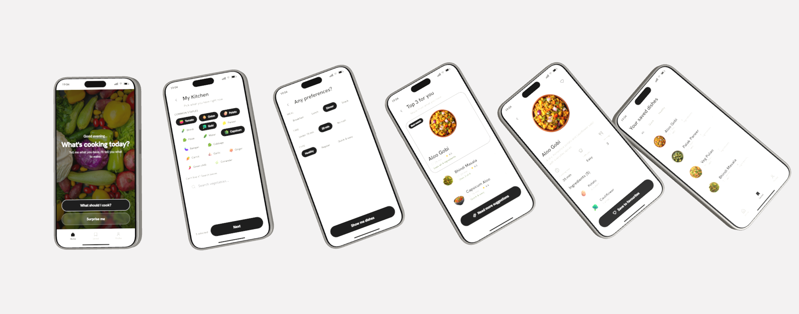
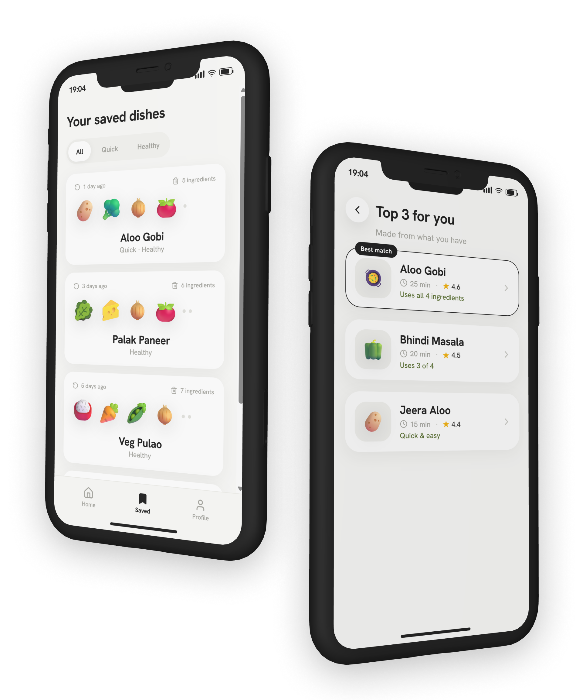
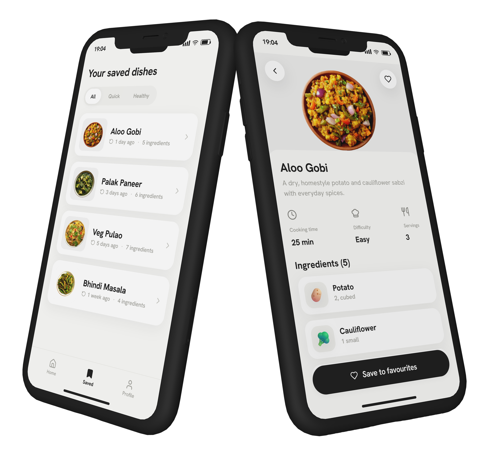
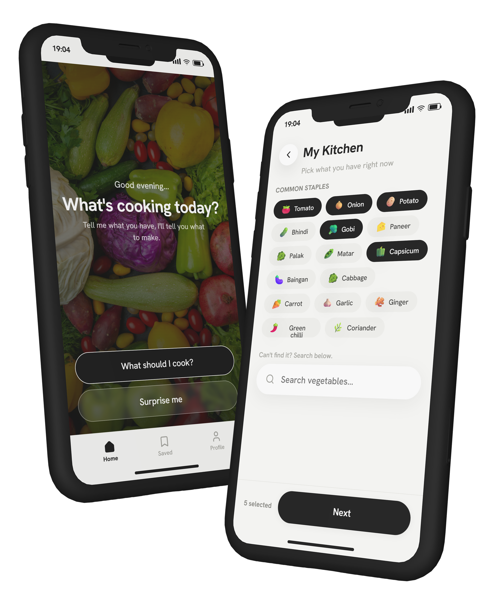
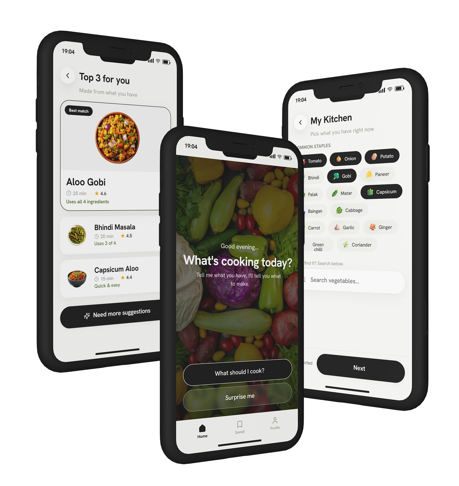
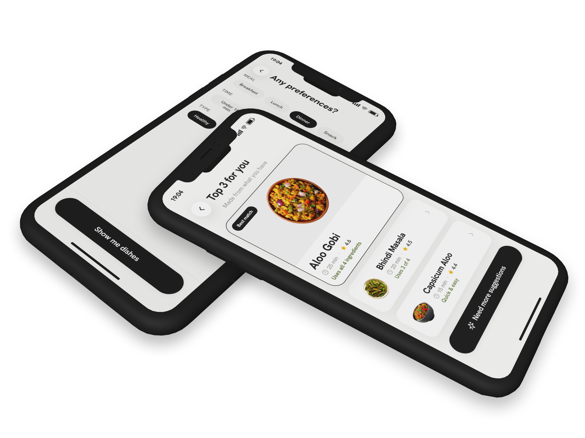

<!doctype html><html lang="en"><head><meta charset="utf-8"><meta name="description" content="Rasoi - a UX research case study on a mobile app that turns fridge ingredients into recipes. By Tulsi Bhuva."><link rel="icon" type="image/png" href="../../favicon.png"><title>Rasoi - A UX Research Case Study - Tulsi Bhuva</title>
<link rel="stylesheet" href="../../styles.css">
<meta name="viewport" content="width=device-width, initial-scale=1">
<link rel="stylesheet" href="../../responsive.css">
<script src="../../responsive.js" defer></script>

<link rel="stylesheet" href="../../_ds/recipe-ai/tokens/fonts.css">
<script src="https://unpkg.com/react@18.3.1/umd/react.development.js" integrity="sha384-hD6/rw4ppMLGNu3tX5cjIb+uRZ7UkRJ6BPkLpg4hAu/6onKUg4lLsHAs9EBPT82L" crossorigin="anonymous"></script>
<script src="https://unpkg.com/react-dom@18.3.1/umd/react-dom.development.js" integrity="sha384-u6aeetuaXnQ38mYT8rp6sbXaQe3NL9t+IBXmnYxwkUI2Hw4bsp2Wvmx4yRQF1uAm" crossorigin="anonymous"></script>
<script src="https://unpkg.com/@babel/standalone@7.29.0/babel.min.js" integrity="sha384-m08KidiNqLdpJqLq95G/LEi8Qvjl/xUYll3QILypMoQ65QorJ9Lvtp2RXYGBFj1y" crossorigin="anonymous"></script>
<script src="../../_ds_bundle.js"></script>
<script src="../../_ds/recipe-ai/_ds_bundle.js"></script>
<style>
a{color:var(--accent);text-decoration:none}a:hover{color:#fff}
/* Recipe AI tokens, scoped to the case-study canvas so the portfolio chrome stays dark */
.rasoi{--ink-900:#181818;--ink-700:#3a3a38;--ink-600:#5c5c58;--ink-500:#8a8a85;--ink-400:#a7a7a1;--ink-300:#c9c9c3;--ink-200:#e4e4df;--ink-100:#eeeeea;--surface-0:#fff;--surface-1:#fafaf8;--surface-2:#f3f3f0;--canvas:#e9e9e6;--protein-bg:#e5efd4;--protein-fg:#586f2c;--fat-bg:#fbe1dc;--fat-fg:#b0604a;--carb-bg:#d9edf0;--carb-fg:#3c7883;--star:#f4b400;--text-strong:var(--ink-900);--text-body:var(--ink-700);--text-muted:var(--ink-400);--text-placeholder:var(--ink-300);--text-on-dark:#fff;--surface-card:var(--surface-0);--surface-app:var(--surface-1);--surface-field:var(--surface-2);--border-subtle:var(--ink-200);--divider:var(--ink-100);--action-primary:var(--ink-900);--action-primary-hover:#000;--action-primary-text:#fff;--focus-ring:rgba(24,24,24,.35);--font-sans:Helvetica,"Helvetica Neue",Arial,system-ui,sans-serif;--font-display:Helvetica,"Helvetica Neue",Arial,system-ui,sans-serif;--fw-regular:400;--fw-medium:500;--fw-semibold:600;--fw-bold:700;--fw-extrabold:800;--fs-display:46px;--lh-display:1.08;--tk-display:-.02em;--fs-title:30px;--lh-title:1.12;--tk-title:-.015em;--fs-h2:23px;--lh-h2:1.2;--tk-h2:-.01em;--fs-lg:19px;--lh-lg:1.35;--fs-body:17px;--lh-body:1.45;--fs-sm:15px;--lh-sm:1.4;--fs-xs:12px;--lh-xs:1.3;--tk-xs:.01em;--radius-sm:12px;--radius-md:16px;--radius-lg:20px;--radius-xl:26px;--radius-2xl:34px;--radius-pill:999px;--shadow-sm:0 1px 2px rgba(24,24,24,.04);--shadow-pill:0 2px 10px rgba(24,24,24,.06);--shadow-card:0 8px 28px rgba(24,24,24,.06);--shadow-float:0 10px 30px rgba(24,24,24,.10);--shadow-sticker:0 6px 14px rgba(24,24,24,.14);--ease-standard:cubic-bezier(.4,0,.2,1);--ease-out:cubic-bezier(.16,1,.3,1);--dur-fast:120ms;--dur-base:220ms;--dur-slow:360ms;background:var(--surface-app);color:var(--text-body);font-family:var(--font-sans)}
.rasoi a{color:var(--ink-900);text-decoration:underline;text-decoration-color:var(--ink-300);text-underline-offset:3px}.rasoi a:hover{color:#000;text-decoration-color:var(--ink-900)}
.rasoi h2,.rasoi h3,.rasoi h4{color:var(--text-strong);margin:0}
.rasoi p{margin:0}
.rai-scroll{overflow-x:auto;scrollbar-width:thin}
</style>
</head>
<body>
<div id="root"></div>
<script type="text/babel" data-presets="react">
const NS = window.TPortfolioDesignSystem_31bff0;
const { Nav, Button, Badge, ScrollTopButton } = NS;
const RAI = window.RecipeAIDesignSystem_af795f;
const { Card, Chip, NutrientTag, StatBlock, FoodSticker } = RAI;

/* ---------- light-canvas primitives, styled from Recipe AI tokens ---------- */
const Wrap = ({children, style}) => <div style={{maxWidth:'none',margin:'0 auto',padding:'0 clamp(24px,8vw,200px)',...style}}>{children}</div>;

const Eyebrow = ({n, children}) => (
  <div style={{display:'flex',alignItems:'center',gap:10,marginBottom:14}}>
    <span style={{display:'inline-flex',alignItems:'center',justifyContent:'center',minWidth:26,height:26,padding:'0 9px',borderRadius:'var(--radius-pill)',background:'var(--surface-field)',color:'var(--ink-600)',font:'var(--fw-semibold) var(--fs-xs)/1 var(--font-sans)',letterSpacing:'var(--tk-xs)'}}>{n}</span>
    <span style={{font:'var(--fw-medium) var(--fs-xs)/1 var(--font-sans)',letterSpacing:'.06em',textTransform:'uppercase',color:'var(--text-muted)'}}>{children}</span>
  </div>
);

const H2 = ({children, sub}) => (
  <h2 style={{font:'var(--fw-bold) var(--fs-display)/var(--lh-display) var(--font-display)',letterSpacing:'var(--tk-display)',marginBottom:sub?6:20,textWrap:'balance'}}>
    {children}{sub && <><br /><span style={{color:'var(--text-muted)'}}>{sub}</span></>}
  </h2>
);

const P = ({children, style}) => <p style={{font:'var(--fw-regular) var(--fs-lg)/1.65 var(--font-sans)',color:'var(--text-body)',maxWidth:'none',...style}}>{children}</p>;

const Sec = ({n, label, title, sub, children, tint, tight}) => (
  <section style={{padding:'0 0 88px'}}>
    <Wrap>
      <Eyebrow n={n}>{label}</Eyebrow>
      <H2 sub={sub}>{title}</H2>
      <div style={{display:'flex',flexDirection:'column',gap:tight?14:24,marginTop:tight?8:(sub?24:0)}}>{children}</div>
    </Wrap>
    {tint}
  </section>
);

/* table → grid rendered on a white card */
const Matrix = ({head, rows, cols}) => (
  <div className="rai-scroll">
    <Card padding={0} style={{minWidth:cols.length>3?720:cols.length===3?640:0,overflow:'hidden'}}>
      {head && <div style={{display:'grid',gridTemplateColumns:cols.join(' '),gap:20,padding:'16px 22px',background:'var(--surface-field)'}}>
        {head.map((h,i)=><div key={i} style={{font:'var(--fw-semibold) var(--fs-xs)/1.3 var(--font-sans)',letterSpacing:'.06em',textTransform:'uppercase',color:'var(--ink-600)'}}>{h}</div>)}
      </div>}
      {rows.map((r,i)=>(
        <div key={i} style={{display:'grid',gridTemplateColumns:cols.join(' '),gap:20,padding:'18px 22px',borderTop:i||head?'1px solid var(--divider)':'none',alignItems:'start'}}>
          {r.map((c,j)=><div key={j} style={{font:`${j===0?'var(--fw-semibold)':'var(--fw-regular)'} var(--fs-body)/1.55 var(--font-sans)`,color:j===0?'var(--text-strong)':'var(--text-body)'}}>{c}</div>)}
        </div>
      ))}
    </Card>
  </div>
);

const AppName = ({icon, children}) => (
  <div style={{display:'flex',alignItems:'center',gap:12}}>
    
    <span>{children}</span>
  </div>
);

const Quote = ({children, style}) => (
  <blockquote style={{margin:0,padding:'4px 0 4px 22px',borderLeft:'3px solid var(--ink-200)',font:'var(--fw-medium) var(--fs-title)/1.4 var(--font-display)',letterSpacing:'var(--tk-title)',color:'var(--text-strong)',maxWidth:'none',textWrap:'pretty',...style}}>{children}</blockquote>
);

const Note = ({label, children}) => (
  <div style={{display:'flex',gap:14,alignItems:'flex-start',padding:'18px 22px',borderRadius:'var(--radius-lg)',background:'var(--fat-bg)'}}>
    <span style={{flexShrink:0,display:'inline-flex',alignItems:'center',minHeight:26,padding:'6px 12px',borderRadius:'var(--radius-pill)',background:'rgba(255,255,255,.65)',color:'var(--fat-fg)',font:'var(--fw-semibold) var(--fs-xs)/1.3 var(--font-sans)',letterSpacing:'.01em',whiteSpace:'nowrap'}}>{label}</span>
    <p style={{font:'var(--fw-regular) var(--fs-body)/1.6 var(--font-sans)',color:'#7d4436',margin:0,maxWidth:'none'}}>{children}</p>
  </div>
);

const Takeaway = ({children}) => (
  <div style={{padding:'22px 26px',borderRadius:'var(--radius-lg)',background:'var(--ink-900)',color:'var(--text-on-dark)'}}>
    <div style={{font:'var(--fw-semibold) var(--fs-xs)/1 var(--font-sans)',letterSpacing:'.08em',textTransform:'uppercase',opacity:.55,marginBottom:10}}>Takeaway</div>
    <p style={{font:'var(--fw-medium) var(--fs-lg)/1.55 var(--font-sans)',margin:0,maxWidth:'none'}}>{children}</p>
  </div>
);

/* ---------- content ---------- */
const snapshot = [
  ['My role','UX researcher and UI designer (solo)'],
  ['Type','Self-initiated project, born from a real-life observation'],
  ['Timeline','Around 3 weeks, part-time'],
  ['Tools','Figma, Notion, pen-and-paper notes'],
  ['Focus of this case study','The research - how a small everyday problem turned into a clear design direction'],
];
const goals = [
  'Check whether the "what should I cook?" confusion is really common, or just something I noticed by chance.',
  "Understand why it happens, even when there's plenty of food at home.",
  'Learn how home cooks currently deal with it, and what would actually help.',
];
const questions = [
  'How do you decide what to cook on a normal day?',
  'What makes it confusing, even when you have lots of vegetables?',
  "Who or what do you turn to when you can't decide?",
  'If something could suggest a dish for you, what would you want it to know first?',
];
const methods = [
  ['Everyday observation','Noticing the problem in my own home and surroundings','This is where the idea came from, and what made me want to check it properly'],
  ['1:1 conversations','Spoke with 5 housewives, informal and relaxed','To hear the real story in their own words'],
  ['Light secondary research','Looked at existing recipe apps',"To see what's already out there and where it falls short"],
];
const competitors = [
  [<AppName icon="./icons/supercook.png">SuperCook</AppName>,'Free recipe generator: you tick the ingredients you have and it lists matching recipes','Western-leaning recipes, English-only, and it hands back a long list to scroll rather than a few clear answers'],
  [<AppName icon="./icons/myfridgefood.png">MyFridgeFood</AppName>,'A "what\u2019s in your fridge" recipe finder along the same lines','Dated feel, mostly Western dishes, still a browse-and-pick flow'],
  [<AppName icon="./icons/samsung-food.png">Samsung Food (Whisk)</AppName>,'Polished recipe saving and weekly meal planning','Recipe-first and feature-heavy; built for people who plan, not for a tired, on-the-spot decision'],
  [<AppName icon="./icons/youtube.png">Recipe apps & YouTube</AppName>,'Huge libraries of recipes, including plenty of Indian ones','You still have to know what you want and go and search for it'],
];
const counts = [
  ['5/5','Felt the same daily "what to cook?" confusion','protein'],
  ['4/5','Said asking family made deciding harder, not easier','fat'],
  ['5/5',"Cook around what's already in the fridge",'protein'],
  ['4/5','Fall back on the same few dishes when tired','fat'],
  ['3/5',"Order in when they just can't decide",'carb'],
  ['4/5','Worry about vegetables going to waste','carb'],
];
const clusters = [
  ['🥕','Decision overload','5/5','She has the vegetables but freezes on what to actually cook.','protein'],
  ['🧅','Too many cooks','4/5','Asking family adds noise instead of a clear answer.','fat'],
  ['🍅','Start from the fridge','5/5','She works from what she already has, not from a recipe.','carb'],
  ['🥒','Stuck on repeat','4/5','Tiredness pushes her back to the same few dishes.','protein'],
];
const learned = [
  ["The confusion is real, and it's daily.",'Every single person described the same moment: standing in the kitchen with plenty of vegetables and no idea what to make. It was purely the decision.'],
  ['Asking family makes it worse, not better.','They got too many different answers, or a lazy "anything is fine." Instead of helping, it added more noise to an already tiring decision.'],
  ['They cook around what they have.','None of them planned meals like a chef. They looked at what was in the fridge and worked from there - the exact opposite of how most recipe apps work.'],
  ['They fall into the same few dishes.',"Because deciding is tiring, they cook the same handful of dishes on repeat. They wanted variety but not the energy to think of new ideas every day."],
];
const personas = [
  {name:'Meena',age:'34',photo:'./personas/meena.png',role:'The busy everyday cook',bio:'Meena cooks three meals a day for her family alongside a dozen other chores. A confident cook but mentally tired - the daily "what to make" question is one decision too many.',goal:'Cook varied meals without spending energy deciding',frustration:'I know how to cook. I just don\u2019t know what to cook today.',needs:"A quick, reliable suggestion from what's already in her kitchen",kind:'protein'},
  {name:'Sunita',age:'52',photo:'./personas/sunita.png',role:'Housewife',bio:"Sunita has cooked for decades and knows plenty of dishes, but she keeps repeating the same few. She'd love new ideas but doesn't go looking for them.",goal:'Break out of the same-dish routine',frustration:'I end up making the same five things again and again.',needs:'Gentle variety and fresh ideas without extra effort',kind:'carb'},
];
const journey = [
  {stage:'Mealtime hits',doing:"Realises it's time to cook",thinking:'“What do I make today?”',feeling:'Slightly tired',pain:'The daily decision looms',help:'Be ready with an answer',mood:3,low:false},
  {stage:'Checks the kitchen',doing:'Opens the fridge, scans the vegetables',thinking:'“I have plenty, but what goes together?”',feeling:'Unsure',pain:'No clear starting point',help:'Suggest dishes from what she has',mood:2,low:false},
  {stage:'Tries to decide',doing:'Runs through options in her head',thinking:'“Nothing is coming to mind.”',feeling:'Overwhelmed',pain:'Decision paralysis',help:'Give one clear suggestion',mood:0,low:true},
  {stage:'Asks the family',doing:'Asks husband or kids for ideas',thinking:'“Someone please just decide.”',feeling:'More confused',pain:'Too many opinions',help:'Replace the debate with a decision',mood:1,low:false},
  {stage:'Cooks or gives up',doing:'Makes a usual dish, or orders in',thinking:'“Same thing yet again.”',feeling:'Bored, or a little guilty',pain:'Variety lost, food and money wasted',help:'Easy variety, less waste',mood:2,low:false},
];
const insightToDesign = [
  ['The confusion is about deciding, not cooking','You pick the vegetables you have and Rasoi suggests a dish - the whole app is built on this'],
  ["They cook around what's in the fridge",'Ingredient-first flow: start from what you have, not from a recipe'],
  ['Asking family adds noise',"One clear suggestion at a time, so there's no debate to have"],
  ['They get stuck in the same few dishes','A "Random Recipe" dice button for a fun, surprise idea'],
  ['Different days need different food','Filters for meal type, time available, and healthy vs regular vs quick'],
  ['Weather changes cravings','Optional weather-based suggestions (something warm and crispy on a rainy day)'],
  ['They want to actually learn the dish','Short recipe steps, with an optional recipe video for those who prefer watching'],
];
const hmw = [
  'How might we turn "what should I cook?" into a decision that takes seconds?',
  'How might we build suggestions around the vegetables she already has?',
  'How might we bring in variety without asking her to think harder?',
  'How might we keep the whole thing simple, even a little fun?',
];const tasks = [
  ['Pick ingredients and get a suggestion','High','100%','-'],
  ['Cook a dish from the steps','High','100%','-'],
  ['Narrow results with filters','High','80%','↓ faster'],
  ['Save a dish to favourites','Medium','100%','-'],
  ['Try the Random Recipe dice','Low','100%','-'],
];
const findings = [
  ['Adding ingredients felt slow.',"A couple of users didn't want to type every vegetable.",'Made icon-tap the default and pre-showed common staples.'],
  ['Users wanted to see the match.','They wanted to know which of their ingredients each dish actually used.','Added a "uses what you have" tag on every suggestion.'],
  ['Three felt right, one felt risky.','Testers were happier seeing the top 3; a lone suggestion felt like a dead end.','Kept three ranked suggestions with a "best match" badge.'],
  ['Steps needed to be shorter.','Some users skimmed and wanted glanceable instructions.','Cut recipes down to short, numbered lines.'],
  ['Suggestions needed real dish photos.','Icons worked for picking ingredients, but people were drawn to a dish far more with a real photo.','Used real dish photos on suggestion cards, icons only for ingredient selection.'],
];
const abSetup = [
  ['Participants','5 users'],
  ['Method','Moderated comparison testing'],
  ['Context','Each person saw both layouts and did the same task: pick something to cook'],
  ['Environment','Prototype-based testing (design tool)'],
];
const roadmap = [
  {when:'Near-term',kind:'protein',items:['Expand the dish database and add regional cuisines: Gujarati, Punjabi, South Indian, Bengali','Hindi and Gujarati language support, so cooks can use Rasoi in their own language','Voice input to speak ingredients hands-free while cooking']},
  {when:'Mid-term',kind:'carb',items:['"Missing just one thing" suggestions with simple substitutes (no curd? use lemon)','Learn family favourites over time, so suggestions get more personal','Faster ingredient entry with receipt or photo scan']},
  {when:'Later (Phase 2)',kind:'fat',items:['A community space where home cooks share recipe videos, tagged with the ingredients used','Weather- and season-based suggestions','Partnerships with local grocery delivery to restock a missing ingredient']},
];
const reflection = [
  ['Lead with the problem, not the feature.','The ingredient-first idea only became obvious after the research, not before it.'],
  ['Small tests still teach a lot.','Five interviews and a quick usability round surfaced most of the real friction.'],
  ['Be honest about limits.','A small sample and a concept-stage product make this a strong direction, not a finished answer.'],
];

function App() {
  const [navVis, setNavVis] = React.useState(true);
  const [variant, setVariant] = React.useState('B');
  const lastY = React.useRef(0);
  React.useEffect(() => {
    const onScroll = () => { const y = window.scrollY; setNavVis(y < 80 || y < lastY.current); lastY.current = y; };
    window.addEventListener('scroll', onScroll, {passive:true});
    return () => window.removeEventListener('scroll', onScroll);
  }, []);
  return (
    <div style={{minHeight:'100vh',background:'var(--bg)',color:'var(--text)'}}>
      <div style={{position:'fixed',top:0,left:0,right:0,zIndex:9999,padding:'20px 32px',pointerEvents:'none',transform:navVis?'translateY(0)':'translateY(-120%)',transition:'transform .35s ease'}}>
        <div style={{maxWidth:1200,margin:'0 auto',pointerEvents:'auto'}}>
          <Nav brand={} links={[{label:'My Work',href:'../../index.html#work'},{label:'About Me',href:'../../index.html#about'},{label:'Experience',href:'../../index.html#experience'},{label:'Services',href:'../../index.html#services'},{label:'Tools',href:'../../index.html#tools'}]} cta={<Button variant="accent" size="sm" onClick={()=>{const f=document.getElementById('contact'); if(f) window.scrollTo({top:f.getBoundingClientRect().top+window.scrollY-40,behavior:'smooth'});}} style={{height:44,width:136,justifyContent:'center',fontSize:16}}>Let's talk</Button>} />
        </div>
      </div>

      {/* DARK HERO - portfolio chrome */}
      <header style={{maxWidth:'none',margin:'140px auto 0',padding:'0 clamp(24px,8vw,200px)'}}>
        <div style={{display:'flex',gap:12,marginBottom:24,flexWrap:'wrap'}}>
          <Badge tone="outline">UX Research</Badge>
          <Badge tone="outline">Mobile App</Badge>
          <Badge tone="outline">Case Study</Badge>
        </div>
        <h1 style={{fontSize:'clamp(48px,7vw,96px)',fontWeight:500,letterSpacing:'-.035em',lineHeight:1,margin:'0 0 16px'}}>Rasoi</h1>
        <p style={{fontSize:20,color:'var(--text-muted)',maxWidth:'60ch',margin:'0 0 40px',lineHeight:1.5}}>A UX Research Case Study · Self-initiated</p>
      </header>
      <div style={{overflow:'hidden',background:'#f2f2f0'}}>
        
      </div>

      {/* LIGHT CANVAS - Recipe AI design system */}
      <div className="rasoi" style={{marginTop:96,paddingTop:88,borderTopLeftRadius:'var(--radius-2xl)',borderTopRightRadius:'var(--radius-2xl)'}}>
        <Wrap style={{paddingBottom:88}}>
          <div style={{display:'flex',gap:14,marginBottom:28}}>
          </div>
          <H2 sub="">RASOI</H2>
          <P style={{marginTop:24,fontSize:'var(--fs-title)',lineHeight:1.5,color:'var(--text-strong)',fontWeight:'var(--fw-medium)',letterSpacing:'-.01em'}}>Rasoi is a mobile app idea for home cooks who open a fridge full of vegetables and still can't decide what to make. The idea came from a real problem I kept seeing in Indian households, so I ran a small research project to understand it properly before designing anything.</P>
          <div style={{marginTop:36,display:'grid',gridTemplateColumns:'repeat(4,minmax(0,1fr))',gap:18}}>
            {snapshot.slice(0,4).map(([label,value],i)=>(
              <div key={i} style={{display:'flex',flexDirection:'column',gap:8,padding:'20px 22px',borderRadius:'var(--radius-md)',background:'var(--surface-card)',boxShadow:'var(--shadow-card)'}}>
                <div style={{font:'var(--fw-regular) var(--fs-sm)/1.3 var(--font-sans)',color:'var(--text-muted)',fontWeight:500}}>{label}</div>
                <div style={{fontWeight:500,color:'var(--text-strong)',letterSpacing:'-.01em',fontSize:16}}>{value}</div>
              </div>
            ))}
          </div>
          <div style={{marginTop:28,display:'flex',flexDirection:'column',gap:8}}>
          </div>
        </Wrap>

        <Sec n="01" label="The problem" title="The problem I noticed" sub="It didn't start with an app idea.">
          <div style={{display:'flex',flexWrap:'wrap',gap:'32px 48px',alignItems:'flex-start'}}>
          <div style={{flex:'1 1 420px',minWidth:0,maxWidth:642,display:'flex',flexDirection:'column',gap:24}}>
          <P style={{fontSize:17}}>Home cooks, especially housewives, often have a fridge full of different vegetables, and yet, right before cooking, they get stuck on one simple question: what should I make today? They ask family members for ideas, but everyone says something different, and that just adds to the confusion.</P>
          <Quote style={{fontSize:25}}>So the food and the ingredients are already there. The struggle is the decision.</Quote>
          <P style={{fontSize:17}}>I saw this happen again and again, and it made me wonder: what if an app could look at the vegetables she already has and simply suggest a dish? It sounds like a small idea, but small daily frustrations are exactly the ones worth solving, because they happen every single day. Before designing anything, I wanted to check one thing: is this really a common problem, or just something I imagined?</P>
          </div>
          
          </div>
        </Sec>

        <Sec n="02" label="Research goals" title="What I wanted to find out" sub="Written down before I opened Figma.">
          <div style={{display:'grid',gridTemplateColumns:'repeat(auto-fit,minmax(min(100%,260px),1fr))',gap:16}}>
            {goals.map((g,i)=>(
              <Card key={i} style={{display:'flex',flexDirection:'column',gap:12}}>
                <NutrientTag kind={['protein','carb','fat'][i]} style={{alignSelf:'flex-start'}}>{'Goal ' + (i+1)}</NutrientTag>
                <p style={{font:'var(--fw-medium) var(--fs-body)/1.55 var(--font-sans)',color:'var(--text-strong)',margin:0}}>{g}</p>
              </Card>
            ))}
          </div>
          <div>
            <h3 style={{font:'var(--fw-bold) var(--fs-h2)/var(--lh-h2) var(--font-display)',letterSpacing:'var(--tk-h2)',marginBottom:14}}>The questions I actually asked</h3>
            <div style={{display:'flex',flexWrap:'wrap',gap:'24px 40px',alignItems:'center'}}>
            <div style={{flex:'1 1 420px',minWidth:0,display:'flex',flexDirection:'column',gap:10}}>
              {questions.map((q,i)=>(
                <div key={i} style={{display:'flex',gap:12,alignItems:'baseline',padding:'14px 18px',borderRadius:'var(--radius-md)',background:'var(--surface-field)'}}>
                  <span style={{font:'var(--fw-bold) var(--fs-xs)/1.4 var(--font-sans)',color:'var(--ink-400)',flexShrink:0}}>Q{i+1}</span>
                  <span style={{font:'var(--fw-medium) var(--fs-body)/1.5 var(--font-sans)',color:'var(--text-strong)'}}>{q}</span>
                </div>
              ))}
            </div>
            
            </div>
          </div>
        </Sec>

        <Sec n="03" label="Method" title="How I ran the research" sub="Small, honest, and mostly conversation.">
          <Matrix head={['Method','What I did','Why']} rows={methods} cols={['minmax(150px,1fr)','minmax(0,1.4fr)','minmax(0,1.4fr)']} />
          <Takeaway>Almost every recipe app starts with a recipe: you pick a dish, then find out what to buy. My home cooks were starting from the opposite end - they already had the vegetables and just needed a dish. That gap is exactly what Rasoi could fill.</Takeaway>
        </Sec>

        <Sec n="04" label="Competitive analysis" title="What already exists" sub="And who it was built for.">
          <Matrix head={['App','What it does','Where it falls short for Indian home cooks']} rows={competitors} cols={['minmax(150px,1fr)','minmax(0,1.3fr)','minmax(0,1.5fr)']} />
          <Card style={{display:'flex',flexDirection:'column',gap:10,background:'#e9e9e6'}}>
            <div style={{font:'var(--fw-semibold) var(--fs-xs)/1 var(--font-sans)',letterSpacing:'.06em',textTransform:'uppercase',color:'var(--ink-400)'}}>The gap Rasoi fills</div>
            <p style={{font:'var(--fw-regular) var(--fs-lg)/1.6 var(--font-sans)',color:'var(--text-body)',margin:0}}>Most of these either assume you already have a dish in mind, or hand you a long list to choose from, which drops the tiring decision right back on the user. None of them combine <strong style={{color:'var(--text-strong)'}}>ingredient-first suggestions</strong>, <strong style={{color:'var(--text-strong)'}}>one clear answer</strong>, <strong style={{color:'var(--text-strong)'}}>everyday Indian cooking</strong>, and a <strong style={{color:'var(--text-strong)'}}>dead-simple flow</strong> for a busy home cook. That mix is the space Rasoi is aiming at.</p>
          </Card>
        </Sec>

        <Sec n="05" label="Primary research" title="Five kitchens, one story" sub="Interviews with home cooks (N = 5).">
          <P>Five home cooks (housewives), ages late-20s to 50s, all cooking for their families every day. Without me leading them, all five described the same daily "what to cook?" confusion.</P>
          <div style={{display:'grid',gridTemplateColumns:'repeat(3,minmax(0,1fr))',gap:16}}>
            {counts.map(([c,t,k],i)=>(
              <Card key={i} style={{display:'flex',flexDirection:'column',gap:10}}>
                <div style={{font:'var(--fw-extrabold) var(--fs-display)/1 var(--font-display)',letterSpacing:'var(--tk-display)',color:'var(--text-strong)'}}>{c}</div>
                <p style={{font:'var(--fw-regular) var(--fs-body)/1.5 var(--font-sans)',color:'var(--text-body)',margin:0}}>{t}</p>
                <div><NutrientTag kind={k}>{i<2?'Decision':i<4?'Habit':'Fallout'}</NutrientTag></div>
              </Card>
            ))}
          </div>
          <div style={{display:'grid',gridTemplateColumns:'repeat(auto-fit,minmax(min(100%,300px),1fr))',gap:24,marginTop:8}}>
            <Quote style={{fontSize:20,fontStyle:'italic'}}>“I have all the vegetables, but my mind just goes blank when it's time to decide.”</Quote>
            <Quote style={{fontSize:20,fontStyle:'italic'}}>“Whatever is lying in the fridge, I have to finish it first, so I cook around that.”</Quote>
          </div>
          <Takeaway>The real problem isn't a lack of recipes, it's the daily decision. That one insight shaped Rasoi's whole direction and almost every screen.</Takeaway>
        </Sec>

        <Sec n="06" label="Synthesis" title="Affinity mapping" sub="Every note on a sticky, grouped into four clusters.">
          <div style={{display:'grid',gridTemplateColumns:'repeat(2,minmax(0,1fr))',gap:20}}>
            {clusters.map(([emoji,name,count,desc,kind],i)=>(
              <Card key={i} style={{display:'flex',flexDirection:'column',gap:14}}>
                <FoodSticker emoji={emoji} alt={name} size={38} />
                <div>
                  <h3 style={{font:'var(--fw-bold) var(--fs-h2)/var(--lh-h2) var(--font-display)',letterSpacing:'var(--tk-h2)',marginBottom:6}}>{name}</h3>
                  <NutrientTag kind={kind}>{count + ' cooks'}</NutrientTag>
                </div>
                <p style={{font:'var(--fw-regular) var(--fs-body)/1.55 var(--font-sans)',color:'var(--text-body)',margin:0}}>{desc}</p>
              </Card>
            ))}
          </div>
          <P>These four clusters set the direction for Rasoi: suggest dishes from what she already has, give one clear answer instead of many, and make variety easy so she breaks the same-dish loop.</P>
        </Sec>

        <Sec n="07" label="Insights" title="What I learned" sub="The same themes, over and over.">
          <div style={{display:'flex',flexWrap:'wrap',gap:'32px 48px',alignItems:'flex-start'}}>
          <div style={{flex:'1 1 440px',minWidth:0,display:'flex',flexDirection:'column',gap:0}}>
            {learned.map(([t,d],i)=>(
              <div key={i} style={{display:'grid',gridTemplateColumns:'36px minmax(0,1fr)',gap:16,padding:'20px 0',borderTop:'1px solid var(--divider)'}}>
                <div style={{font:'var(--fw-bold) 20px/1 var(--font-display)',color:'var(--ink-300)'}}>{'0'+(i+1)}</div>
                <div>
                  <h3 style={{font:'var(--fw-bold) 19px/1.3 var(--font-display)',letterSpacing:'var(--tk-h2)',marginBottom:6}}>{t}</h3>
                  <p style={{font:'var(--fw-regular) 15px/1.6 var(--font-sans)',color:'var(--text-body)',margin:0,maxWidth:'none'}}>{d}</p>
                </div>
              </div>
            ))}
          </div>
          
          </div>
        </Sec>

        <Sec n="08" label="Personas" title="The two home cooks" sub="Different ages, one shared root.">
          <div style={{display:'grid',gridTemplateColumns:'repeat(auto-fit,minmax(min(100%,320px),1fr))',gap:20}}>
            {personas.map((p,i)=>(
              <Card key={i} padding={26} style={{display:'flex',flexDirection:'column',gap:18}}>
                <div style={{display:'flex',alignItems:'center',gap:16}}>
                  
                  <div style={{flex:1,minWidth:0}}>
                    <h3 style={{font:'var(--fw-bold) var(--fs-title)/1.1 var(--font-display)',letterSpacing:'var(--tk-title)'}}>{p.name}, {p.age}</h3>
                    <div style={{font:'var(--fw-medium) var(--fs-sm)/1.3 var(--font-sans)',color:'var(--text-muted)',marginTop:4}}>{p.role}</div>
                  </div>
                </div>
                <p style={{font:'var(--fw-regular) var(--fs-body)/1.6 var(--font-sans)',color:'var(--text-body)',margin:0}}>{p.bio}</p>
                <div style={{display:'flex',flexDirection:'column',gap:32,marginTop:8}}>
                  {[['Goal',p.goal],['Pain',p.frustration],['Needs',p.needs]].map(([label,body],j)=>(
                    <div key={j} style={{display:'flex',flexDirection:'column',gap:10}}>
                      <div style={{font:'var(--fw-bold) var(--fs-h2)/1.2 var(--font-display)',letterSpacing:'var(--tk-h2)',color:'var(--text-strong)'}}>{label}</div>
                      <div style={{font:'var(--fw-regular) var(--fs-lg)/1.55 var(--font-sans)',color:'var(--text-body)'}}>{body}</div>
                    </div>
                  ))}
                </div>
              </Card>
            ))}
          </div>
          <P>Different ages and needs, but one shared root: the daily decision drains them. That became my north star.</P>
        </Sec>

        <Sec n="09" label="Journey" title="One weeknight, five steps" sub="And the one moment Rasoi is built to rescue.">
          <div className="rai-scroll">
            <div style={{minWidth:1040,paddingBottom:6}}>
              <div style={{display:'grid',gridTemplateColumns:`132px repeat(${journey.length},minmax(170px,1fr))`,columnGap:10}}>
                <div></div>
                {journey.map((s,i)=>(
                  <div key={i} style={{padding:'14px 16px',borderRadius:'var(--radius-md) var(--radius-md) 0 0',background:s.low?'#d9edf0':'var(--surface-card)',boxShadow:s.low?'none':'var(--shadow-card)'}}>
                    <div style={{font:'var(--fw-bold) var(--fs-xs)/1 var(--font-sans)',letterSpacing:'.06em',textTransform:'uppercase',color:s.low?'var(--text-muted)':'var(--ink-400)',marginBottom:6}}>Step {i+1}</div>
                    <h3 style={{font:'var(--fw-bold) var(--fs-h3, var(--fs-h2))/1.2 var(--font-display)',letterSpacing:'var(--tk-h2)',color:s.low?'#3c7883':'var(--text-strong)'}}>{s.stage}</h3>
                  </div>
                ))}

                <div style={{gridColumn:'1 / 2',margin:'32px 0 40px',display:'flex',flexDirection:'column'}}>
                  <div style={{font:'var(--fw-semibold) var(--fs-xs)/1.3 var(--font-sans)',letterSpacing:'.06em',textTransform:'uppercase',color:'var(--text-muted)',marginBottom:8}}>Emotion</div>
                </div>
                <div style={{gridColumn:'2 / -1',position:'relative',height:132,margin:'32px 0 40px',paddingTop:24}}>
                  <div style={{position:'absolute',left:0,right:0,top:24,bottom:0}}>
                    {[0,.5,1].map(t=><div key={t} style={{position:'absolute',left:0,right:0,top:`${t*100}%`,borderTop:'1px '+(t===1?'solid':'dashed')+' var(--divider)'}}></div>)}
                    <svg viewBox="0 0 100 100" preserveAspectRatio="none" style={{position:'absolute',inset:0,width:'100%',height:'100%',overflow:'visible'}}>
                      <defs><linearGradient id="raiMood" x1="0" y1="0" x2="0" y2="1"><stop offset="0" stopColor="rgba(217,237,240,.9)"/><stop offset="1" stopColor="rgba(217,237,240,0)"/></linearGradient></defs>
                      <path d={(()=>{const n=journey.length,pts=journey.map((s,i)=>[(i+.5)/n*100,(1-s.mood/3)*100]);let d=`M${pts[0][0]},${pts[0][1]}`;for(let i=1;i<pts.length;i++){const[x0,y0]=pts[i-1],[x1,y1]=pts[i];d+=` C${(x0+x1)/2},${y0} ${(x0+x1)/2},${y1} ${x1},${y1}`}return d})()} fill="none" stroke="var(--carb-fg)" strokeWidth="2.5" vectorEffect="non-scaling-stroke" strokeLinejoin="round" strokeLinecap="round"/>
                      <path d={(()=>{const n=journey.length,pts=journey.map((s,i)=>[(i+.5)/n*100,(1-s.mood/3)*100]);let d=`M${pts[0][0]},100 L${pts[0][0]},${pts[0][1]}`;for(let i=1;i<pts.length;i++){const[x0,y0]=pts[i-1],[x1,y1]=pts[i];d+=` C${(x0+x1)/2},${y0} ${(x0+x1)/2},${y1} ${x1},${y1}`}return d+` L${pts[n-1][0]},100 Z`})()} fill="url(#raiMood)" stroke="none"/>
                    </svg>
                    {journey.map((s,i)=>(
                      <React.Fragment key={i}>
                        <div style={{position:'absolute',left:`${(i+.5)/journey.length*100}%`,top:`${(1-s.mood/3)*100}%`,transform:'translate(-50%,-50%)',width:s.low?16:11,height:s.low?16:11,borderRadius:'50%',background:s.low?'var(--carb-fg)':'var(--surface-1, #fafaf8)',boxShadow:s.low?'0 0 0 6px #D9EDF0':'inset 0 0 0 3px var(--carb-fg)'}}></div>
                        <div style={{position:'absolute',left:`${(i+.5)/journey.length*100}%`,top:`${(1-s.mood/3)*100}%`,transform:`translate(-50%,${s.low?'14px':'-30px'})`,whiteSpace:'nowrap',font:`${s.low?'var(--fw-bold)':'var(--fw-medium)'} var(--fs-xs)/1 var(--font-sans)`,color:s.low?'var(--carb-fg)':'var(--text-muted)'}}>{s.feeling}</div>
                      </React.Fragment>
                    ))}
                  </div>
                </div>

                {[['Doing','doing'],['Thinking','thinking'],['Pain point','pain'],['Rasoi helps','help']].map(([label,key])=>(
                  <React.Fragment key={key}>
                    <div style={{padding:'14px 0',borderTop:'1px solid var(--divider)',font:'var(--fw-semibold) var(--fs-xs)/1.3 var(--font-sans)',letterSpacing:'.06em',textTransform:'uppercase',color:'var(--text-muted)'}}>{label}</div>
                    {journey.map((s,i)=>(
                      <div key={i} style={{padding:'14px 16px',borderTop:'1px solid '+(s.low?'rgba(176,96,74,.22)':'var(--divider)'),background:s.low?'#d9edf0':(key==='help'?'var(--surface-card)':'transparent'),font:`${key==='help'?'var(--fw-semibold)':'var(--fw-regular)'} var(--fs-sm)/1.55 var(--font-sans)`,color:s.low?'#3c7883':(key==='help'?'var(--text-strong)':'var(--text-body)')}}>{s[key]}</div>
                    ))}
                  </React.Fragment>
                ))}

                <div></div>
                {journey.map((s,i)=>(
                  <div key={i} style={{padding:'14px 16px 16px',borderTop:'1px solid '+(s.low?'rgba(176,96,74,.22)':'transparent'),borderRadius:'0 0 var(--radius-md) var(--radius-md)',background:s.low?'#d9edf0':'transparent'}}>
                    {s.low && <NutrientTag kind="fat" style={{background:'rgba(255,255,255,.7)',color:'#3c7883'}}>Emotional low</NutrientTag>}
                  </div>
                ))}
              </div>
            </div>
          </div>
          <P>The emotional low sits right in the middle, at “Tries to decide.” That is the exact moment Rasoi is built to rescue, with one clear suggestion drawn from what she already has.</P>
        </Sec>

        <Sec n="10" label="Ideation" title="Ideas, then edits" sub="Diverge wide, then score on impact vs effort.">
          <P>In a quick divergent brainstorm I listed everything from a simple suggestion tool to a full meal planner and a community feed. Then I scored each idea on impact versus effort: which ones I could realistically design in the time I had, at low or medium effort, that would still help the user the most.</P>
          <Card style={{display:'flex',flexDirection:'column',gap:18,padding:'24px 26px 20px'}}>
            <div style={{display:'flex',alignItems:'baseline',gap:12,flexWrap:'wrap'}}>
              <h3 style={{font:'var(--fw-bold) var(--fs-body)/1.3 var(--font-sans)',letterSpacing:'.01em',color:'var(--text-strong)'}}>Impact vs effort: what to build first</h3>
              <div style={{display:'flex',alignItems:'center',gap:14,marginLeft:'auto'}}>
                <div style={{display:'flex',alignItems:'center',gap:6,font:'var(--fw-medium) var(--fs-xs)/1 var(--font-sans)',color:'var(--text-muted)'}}><span style={{width:10,height:10,borderRadius:3,background:'var(--text-strong)'}}></span>Shipped in v1</div>
                <div style={{display:'flex',alignItems:'center',gap:6,font:'var(--fw-medium) var(--fs-xs)/1 var(--font-sans)',color:'var(--text-muted)'}}><span style={{width:10,height:10,borderRadius:3,background:'var(--carb-bg)',boxShadow:'inset 0 0 0 1px var(--carb-fg)'}}></span>Parked for later</div>
              </div>
            </div>
            <div style={{display:'grid',gridTemplateColumns:'minmax(120px,190px) 1fr',columnGap:16,rowGap:2,alignItems:'center'}}>
              {[
                ['Top-3 dish suggestions',9,true],
                ['Smart filters',8,true],
                ['Random Recipe dice',7,true],
                ['Weather-based ideas',5,false],
                ['Community recipe videos',4,false],
                ['Full meal planner',2,false],
              ].map(([label,score,shipped],i)=>(
                <React.Fragment key={i}>
                  <div style={{textAlign:'right',font:'var(--fw-medium) var(--fs-sm)/1.35 var(--font-sans)',color:'var(--text-body)'}}>{label}</div>
                  <div style={{display:'flex',alignItems:'center',gap:10,height:44,borderTop:i?'1px solid var(--divider)':'none'}}>
                    <div style={{flex:1,position:'relative',height:26}}>
                      <div style={{position:'absolute',inset:0,width:`${score/10*100}%`,borderRadius:'0 6px 6px 0',background:shipped?'var(--text-strong)':'var(--carb-bg)',boxShadow:shipped?'none':'inset 0 0 0 1px var(--carb-fg)'}}></div>
                      <div style={{position:'absolute',top:0,left:`calc(${score/10*100}% + 10px)`,height:26,display:'flex',alignItems:'center',font:'var(--fw-bold) var(--fs-sm)/1 var(--font-sans)',color:'var(--text-strong)'}}>{score}</div>
                    </div>
                  </div>
                </React.Fragment>
              ))}
              <div></div>
              <div style={{borderTop:'1px solid var(--divider)',paddingTop:8,display:'flex',flexDirection:'column',gap:6}}>
                <div style={{display:'flex',justifyContent:'space-between',font:'var(--fw-medium) var(--fs-xs)/1 var(--font-sans)',color:'var(--text-muted)'}}>
                  {[0,2,4,6,8,10].map(t=><span key={t}>{t}</span>)}
                </div>
                <div style={{font:'var(--fw-regular) var(--fs-xs)/1 var(--font-sans)',color:'var(--text-muted)',textAlign:'center'}}>Priority score</div>
              </div>
            </div>
            <div style={{font:'var(--fw-regular) var(--fs-xs)/1.5 var(--font-sans)',color:'var(--text-muted)',borderTop:'1px solid var(--divider)',paddingTop:12}}>Higher = more user impact for less design effort. The top three went into v1; the rest are strong ideas, just heavier to build.</div>
          </Card>
          <Card style={{display:'flex',flexDirection:'column',gap:8,padding:'20px 22px'}}>
            <h3 style={{font:'var(--fw-bold) var(--fs-h2)/var(--lh-h2) var(--font-display)',letterSpacing:'var(--tk-h2)',color:'var(--text-strong)'}}>Selected concepts</h3>
            <div style={{font:'var(--fw-regular) var(--fs-body)/1.65 var(--font-sans)',color:'var(--text-body)'}}>I went with the combo that hit the most common pain points and was realistic to build: top-3 dish suggestions from the ingredients you have, smart filters (meal, time, healthy or quick), and the Random Recipe dice. Weather-based ideas, the community space, and voice or language support are strong but heavier, so they move to later phases.</div>
          </Card>
        </Sec>

        <Sec n="11" label="Architecture" title="Information architecture &amp; sitemap" sub="Pick ingredients, see the top 3, open a dish.">
          <P>With the concepts set, I mapped how the app is organised so the structure stays simple and nothing important gets buried. Rasoi keeps a deliberately shallow layout: the core flow is just pick ingredients, see the top 3, open a dish.</P>
          <div className="rai-scroll">
            <div style={{position:'relative',width:920,height:664,minWidth:920,margin:'8px auto 0'}}>
              <svg viewBox="0 0 920 664" style={{position:'absolute',inset:0,width:920,height:664,overflow:'visible'}}>
                <defs><marker id="raiArrow" viewBox="0 0 8 8" refX="4" refY="4" markerWidth="5" markerHeight="5" orient="auto"><path d="M0,1 L6,4 L0,7 Z" fill="var(--ink-400)"/></marker></defs>
                {[
                  [430,66,90,114],[430,66,300,114],[430,66,500,114],[430,66,690,114],
                  [300,160,190,216],[690,160,540,216],[690,160,760,216],
                  [190,280,190,338],[190,402,190,450],
                  [190,496,310,554],[450,496,340,554],
                  [300,160,450,450],
                ].map(([x1,y1,x2,y2],i)=>(
                  <path key={i} d={`M${x1},${y1} C${x1},${y1+(y2-y1)*0.55} ${x2},${y2-(y2-y1)*0.55} ${x2},${y2}`} fill="none" stroke="var(--ink-300, #c9c9c3)" strokeWidth="1.5" markerEnd="url(#raiArrow)"/>
                ))}
              </svg>
              {[
                ['Rasoi','',380,20,100,46,'root'],
                ['Onboarding','',15,114,150,46,'tab'],
                ['Home: Cook tonight','',192,114,216,46,'tab'],
                ['Saved','',446,114,108,46,'tab'],
                ['Profile & Settings','',592,114,196,46,'tab'],
                ['My Kitchen','pick ingredients',97,216,186,64,'leaf'],
                ['Language','',474,216,132,46,'leaf'],
                ['Preferences','veg, region',683,216,154,64,'leaf'],
                ['Filters','meal, time, type',97,338,186,64,'leaf'],
                ['Top 3 suggestions','',97,450,186,46,'leaf'],
                ['Random Recipe dice','',350,450,200,46,'leaf'],
                ['Dish detail','steps',250,554,160,64,'leaf'],
              ].map(([label,sub,x,y,w,h,kind],i)=>(
                <div key={i} style={{position:'absolute',left:x,top:y,width:w,height:h,display:'flex',flexDirection:'column',alignItems:'center',justifyContent:'center',gap:2,textAlign:'center',borderRadius:kind==='root'?999:'var(--radius-md)',padding:'0 12px',background:kind==='root'?'var(--text-strong)':'var(--surface-card)',boxShadow:kind==='tab'?'var(--shadow-card)':'none',border:kind==='leaf'?'1px solid var(--divider)':'none'}}>
                  <div style={{font:'var(--fw-bold) var(--fs-sm)/1.25 var(--font-sans)',color:kind==='root'?'var(--surface-card)':'var(--text-strong)'}}>{label}</div>
                  {sub && <div style={{font:'var(--fw-regular) var(--fs-xs)/1.25 var(--font-sans)',color:'var(--text-muted)'}}>{sub}</div>}
                </div>
              ))}
            </div>
          </div>
          <P>Three tabs carry the whole app: Home, Saved, and Profile. Onboarding sits ahead of Home; the community space would slot in as a fourth tab in a later phase.</P>
        </Sec>

        <Sec n="12" label="Wireframes" title="Sketching the core flow" sub="Six screens, low fidelity, one decision each.">
          <P>I wireframed the whole flow in low fidelity first, so I could judge structure and wording before worrying about looks. Each screen was allowed to carry one decision - what's in your kitchen, what kind of meal, which dish - so nothing asks the cook to think about two things at once.</P>
          <div style={{display:'grid',gridTemplateColumns:'repeat(auto-fit,minmax(min(100%,260px),1fr))',gap:'32px 24px'}}>
            {[
              ['01','Onboarding','One promise, one button.','./wireframes/01-splash.png'],
              ['02','Home','The whole app behind one question.','./wireframes/02-home.png'],
              ['03','My kitchen','Tap the vegetables you actually have.','./wireframes/03-kitchen.png'],
              ['04','Filters','Meal, time, food type - three taps, optional.','./wireframes/04-filters.png'],
              ['05','Top 3','A clear best match, not a wall of options.','./wireframes/05-top3.png'],
              ['06','Dish detail','Ingredients used, then short steps.','./wireframes/06-detail.png'],
            ].map(([n,title,caption,src],i)=>(
              <figure key={i} style={{margin:0,display:'flex',flexDirection:'column',gap:14}}>
                
                <figcaption style={{display:'flex',gap:12,alignItems:'baseline'}}>
                  <span style={{font:'var(--fw-bold) var(--fs-xs)/1 var(--font-sans)',letterSpacing:'.06em',color:'var(--ink-400)',paddingTop:4}}>{n}</span>
                  <span style={{display:'flex',flexDirection:'column',gap:4}}>
                    <span style={{font:'var(--fw-bold) var(--fs-h3, var(--fs-h2))/1.2 var(--font-display)',letterSpacing:'var(--tk-h2)',color:'var(--text-strong)'}}>{title}</span>
                    <span style={{font:'var(--fw-regular) var(--fs-sm)/1.5 var(--font-sans)',color:'var(--text-muted)'}}>{caption}</span>
                  </span>
                </figcaption>
              </figure>
            ))}
          </div>
        </Sec>

        <Sec n="13" label="High fidelity" title="The screens, in colour" sub="Near-black actions, warm off-white canvas, 3D food.">
          <P>In high fidelity the structure stayed exactly as wireframed - only the surface changed. The canvas is a warm off-white, every primary action is near-black so there is never a question about what to tap next, and the only real colour comes from the 3D food itself.</P>
          <div style={{display:'grid',gridTemplateColumns:'repeat(auto-fit,minmax(min(100%,250px),1fr))',gap:'36px 28px'}}>
            {[
              ['01','Home','One question, one button, nothing else to parse.','./screens/01-home.png'],
              ['02','My Kitchen','Tap what you actually have. Count stays visible.','./screens/02-kitchen.png'],
              ['03','Preferences','Meal, time, type - optional, three taps at most.','./screens/03-preferences.png'],
              ['04','Top 3 for you','Best match is framed, not just first in a list.','./screens/04-top3.png'],
              ['05','Dish detail','Time, difficulty, servings, then ingredients.','./screens/05-detail.png'],
              ['06','Saved','Family favourites, filterable, re-cook in a tap.','./screens/06-saved.png'],
            ].map(([n,title,caption,src],i)=>(
              <figure key={i} style={{margin:0,display:'flex',flexDirection:'column',gap:16}}>
                
                <figcaption style={{display:'flex',gap:12,alignItems:'baseline'}}>
                  <span style={{font:'var(--fw-bold) var(--fs-xs)/1 var(--font-sans)',letterSpacing:'.06em',color:'var(--ink-400)',paddingTop:4}}>{n}</span>
                  <span style={{display:'flex',flexDirection:'column',gap:4}}>
                    <span style={{font:'var(--fw-bold) var(--fs-h3, var(--fs-h2))/1.2 var(--font-display)',letterSpacing:'var(--tk-h2)',color:'var(--text-strong)'}}>{title}</span>
                    <span style={{font:'var(--fw-regular) var(--fs-sm)/1.5 var(--font-sans)',color:'var(--text-muted)'}}>{caption}</span>
                  </span>
                </figcaption>
              </figure>
            ))}
          </div>
        </Sec>

        <Sec n="14" label="Usability testing" title="Where it stumbled" sub="Moderated testing with five home cooks.">
          <div style={{display:'grid',gridTemplateColumns:'repeat(auto-fit,minmax(min(100%,180px),1fr))',gap:16}}>
            <Card><StatBlock label="Participants" value="5 home cooks" /></Card>
            <Card><StatBlock label="Overall success" value="~92%" /></Card>
            <Card><StatBlock label="Tasks tested" value="5" /></Card>
            <Card><StatBlock label="Main stumble" value="Adding ingredients" /></Card>
          </div>
          <Matrix head={['Task','Priority','Success rate','Time change']} rows={tasks} cols={['minmax(0,1.6fr)','minmax(80px,.6fr)','minmax(90px,.7fr)','minmax(90px,.7fr)']} />
          <div>
            <h3 style={{font:'var(--fw-bold) var(--fs-h2)/var(--lh-h2) var(--font-display)',letterSpacing:'var(--tk-h2)',marginBottom:16}}>Key findings, and what I changed</h3>
            <div style={{display:'grid',gridTemplateColumns:'minmax(0,1fr) 56px minmax(0,1fr)',rowGap:16,alignItems:'stretch'}}>
              <div style={{font:'var(--fw-semibold) var(--fs-xs)/1 var(--font-sans)',letterSpacing:'.06em',textTransform:'uppercase',color:'var(--text-muted)',paddingBottom:10}}>What I found</div>
              <div></div>
              <div style={{font:'var(--fw-semibold) var(--fs-xs)/1 var(--font-sans)',letterSpacing:'.06em',textTransform:'uppercase',color:'var(--text-muted)',paddingBottom:10}}>What I changed</div>
              {findings.map(([t,d,a],i)=>(
                <React.Fragment key={i}>
                  <Card padding={20} style={{display:'flex',flexDirection:'column',gap:6}}>
                    <h4 style={{font:'var(--fw-bold) var(--fs-lg)/1.3 var(--font-sans)',margin:0}}>{t}</h4>
                    <p style={{font:'var(--fw-regular) var(--fs-body)/1.55 var(--font-sans)',color:'var(--text-body)',margin:0}}>{d}</p>
                  </Card>
                  <div style={{position:'relative',display:'flex',alignItems:'center'}}>
                    <div style={{height:1,flex:1,background:'var(--ink-300, #c9c9c3)'}}></div>
                    <svg width="9" height="10" viewBox="0 0 9 10" style={{flexShrink:0,marginLeft:-1}}><path d="M0,0 L8,5 L0,10 Z" fill="var(--ink-300, #c9c9c3)"/></svg>
                  </div>
                  <Card padding={20} style={{display:'flex',flexDirection:'column',gap:10,background:'var(--protein-bg)',boxShadow:'none'}}>
                    <NutrientTag kind="protein" style={{alignSelf:'flex-start',background:'rgba(255,255,255,.7)'}}>Action</NutrientTag>
                    <p style={{font:'var(--fw-medium) var(--fs-body)/1.55 var(--font-sans)',color:'var(--text-strong)',margin:0}}>{a}</p>
                  </Card>
                </React.Fragment>
              ))}
            </div>
          </div>
        </Sec>

        <Sec n="15" label="A/B testing" title="Three equal cards, or one best match?" sub="Testing the Top 3 screen.">
          <P>During usability testing, people understood the suggestions screen at a high level, but they varied in how quickly and confidently they picked a dish. To reduce that ambiguity, I compared two layouts of the Top 3 screen to see which one helped people decide faster. This test wasn't meant to be statistically conclusive, just to guide the design direction.</P>
          <Matrix rows={abSetup} cols={['minmax(140px,200px)','minmax(0,1fr)']} />
          <div style={{display:'grid',gridTemplateColumns:'repeat(auto-fit,minmax(min(100%,260px),1fr))',gap:'28px 32px',alignItems:'start'}}>
            {[
              ['Variant A','Three equal cards','All three dishes shown as equal, full-width cards, top to bottom.','./ab/variant-a.png',false],
              ['Variant B','Emphasised best match','One larger “Best match” card on top, with the other two as smaller options below.','./ab/variant-b.png',true],
            ].map(([tag,title,desc,src,dark],i)=>(
              <div key={i} style={{display:'flex',flexDirection:'column',gap:18}}>
                <div style={{display:'flex',flexDirection:'column',gap:6,padding:'16px 18px',borderRadius:'var(--radius-md)',background:dark?'var(--ink-900)':'var(--surface-card)',border:dark?'none':'1px solid var(--divider)'}}>
                  <div style={{font:'var(--fw-semibold) var(--fs-xs)/1 var(--font-sans)',letterSpacing:'.06em',textTransform:'uppercase',color:dark?'rgba(255,255,255,.6)':'var(--text-muted)'}}>{tag}</div>
                  <div style={{font:'var(--fw-bold) var(--fs-lg)/1.3 var(--font-sans)',color:dark?'#fff':'var(--text-strong)'}}>{title}</div>
                  <div style={{font:'var(--fw-regular) var(--fs-sm)/1.5 var(--font-sans)',color:dark?'rgba(255,255,255,.72)':'var(--text-body)'}}>{desc}</div>
                </div>
                
              </div>
            ))}
          </div>
          <div style={{display:'flex',flexDirection:'column',gap:12}}>
            <div style={{font:'var(--fw-semibold) var(--fs-xs)/1 var(--font-sans)',letterSpacing:'.06em',textTransform:'uppercase',color:'var(--text-muted)'}}>Key results - directional, based on 5 users</div>
            <Card style={{display:'flex',flexDirection:'column',gap:10}}>
              <NutrientTag kind="carb" style={{alignSelf:'flex-start'}}>Mixed</NutrientTag>
              <h4 style={{font:'var(--fw-bold) var(--fs-lg)/1.35 var(--font-sans)'}}>A few liked Variant A's balance</h4>
              <p style={{font:'var(--fw-regular) var(--fs-body)/1.55 var(--font-sans)',color:'var(--text-body)',margin:0}}>But it took them longer to commit.</p>
            </Card>
            <div style={{display:'grid',gridTemplateColumns:'repeat(auto-fit,minmax(min(100%,280px),1fr))',gap:16,alignItems:'start'}}>
              <Card style={{display:'flex',flexDirection:'column',gap:10}}>
                <NutrientTag kind="protein" style={{alignSelf:'flex-start'}}>Won</NutrientTag>
                <h4 style={{font:'var(--fw-bold) var(--fs-lg)/1.35 var(--font-sans)'}}>Most people decided faster with Variant B</h4>
                <p style={{font:'var(--fw-regular) var(--fs-body)/1.55 var(--font-sans)',color:'var(--text-body)',margin:0}}>The “Best match” card gave them a clear starting point instead of weighing three equal options.</p>
              </Card>
            </div>
          </div>
        </Sec>

        <Sec n="16" label="Iteration" title="The pass after testing" sub="Real food, fewer taps, staples first.">
          <P>The last pass was about trust and speed. Illustrated food was replaced with real photography so a dish looks like something you would actually cook, the kitchen now leads with common staples and pushes search below them, and the best match carries a full photo so the top choice reads instantly.</P>
          <div style={{display:'grid',gridTemplateColumns:'repeat(auto-fit,minmax(min(100%,250px),1fr))',gap:'36px 28px'}}>
            {[
              ['01','Home','Full-bleed produce photo behind the one question.','./iteration/01-home.png'],
              ['02','My Kitchen','Common staples first, search moved below them.','./iteration/02-kitchen.png'],
              ['03','Preferences','Tighter spacing so all three rows fit without scrolling.','./iteration/03-preferences.png'],
              ['04','Top 3 for you','Best match gets a real photo; the rest stay compact.','./iteration/04-top3.png'],
              ['05','Dish detail','Photo hero instead of a sticker, same stat row.','./iteration/05-detail.png'],
              ['06','Saved','Dish photos and last-cooked date, one tap to re-open.','./iteration/06-saved.png'],
            ].map(([n,title,caption,src],i)=>(
              <figure key={i} style={{margin:0,display:'flex',flexDirection:'column',gap:16}}>
                
                <figcaption style={{display:'flex',gap:12,alignItems:'baseline'}}>
                  <span style={{font:'var(--fw-bold) var(--fs-xs)/1 var(--font-sans)',letterSpacing:'.06em',color:'var(--ink-400)',paddingTop:4}}>{n}</span>
                  <span style={{display:'flex',flexDirection:'column',gap:4}}>
                    <span style={{font:'var(--fw-bold) var(--fs-h3, var(--fs-h2))/1.2 var(--font-display)',letterSpacing:'var(--tk-h2)',color:'var(--text-strong)'}}>{title}</span>
                    <span style={{font:'var(--fw-regular) var(--fs-sm)/1.5 var(--font-sans)',color:'var(--text-muted)'}}>{caption}</span>
                  </span>
                </figcaption>
              </figure>
            ))}
          </div>
        </Sec>

        <Sec n="17" label="Brand guidelines" title="The visual language" sub="Near-monochrome canvas, colour only from the food.">
          <P>Rasoi is deliberately monochrome. A warm near-black ink ramp sits on warm off-whites, every primary action is the same near-black so there is never a question about what to tap, and the only saturated colour in the whole system comes from the pastel nutrient tags and the food itself.</P>
          <div style={{display:'flex',flexDirection:'column',gap:16}}>
            <Card style={{display:'flex',flexDirection:'column',gap:10}}>
              <div style={{font:'var(--fw-semibold) var(--fs-xs)/1 var(--font-sans)',letterSpacing:'.06em',textTransform:'uppercase',color:'var(--text-muted)'}}>Colour</div>
              <div style={{display:'grid',gridTemplateColumns:'repeat(6,minmax(0,1fr))',gap:12}}>
                {['#181818','#fafaf8','#e9e9e6','#e5efd4','#fbe1dc','#d9edf0'].map((hex,i)=>(
                  <div key={i} style={{height:110,borderRadius:'var(--radius-md)',background:hex,border:'1px solid var(--divider)'}}></div>
                ))}
              </div>
            </Card>
            <Card style={{display:'flex',flexDirection:'column',gap:10}}>
              <div style={{font:'var(--fw-semibold) var(--fs-xs)/1 var(--font-sans)',letterSpacing:'.06em',textTransform:'uppercase',color:'var(--text-muted)'}}>Type</div>
              <div style={{display:'flex',flexDirection:'column',gap:10}}>
                <div style={{font:'var(--fw-medium) var(--fs-body)/1.4 var(--font-sans)',color:'var(--text-strong)'}}>Helvetica</div>
                <div style={{font:'var(--fw-bold) 34px/1.1 var(--font-display)',letterSpacing:'-.02em',color:'var(--text-strong)'}}>Display 34 / bold</div>
                <div style={{font:'var(--fw-bold) var(--fs-lg)/1.3 var(--font-sans)',color:'var(--text-strong)'}}>Heading 18 / bold</div>
                <div style={{font:'var(--fw-regular) var(--fs-body)/1.6 var(--font-sans)',color:'var(--text-body)'}}>Body 15 / regular, muted grey for anything secondary</div>
              </div>
            </Card>
            <Card style={{display:'flex',flexDirection:'column',gap:10}}>
              <div style={{font:'var(--fw-semibold) var(--fs-xs)/1 var(--font-sans)',letterSpacing:'.06em',textTransform:'uppercase',color:'var(--text-muted)'}}>Shape &amp; depth</div>
              <div style={{display:'flex',gap:12,alignItems:'flex-end'}}>
                {[999,20,34].map((r,i)=>(
                  <div key={i} style={{flex:1,height:88,borderRadius:r,background:'var(--canvas, #e9e9e6)',boxShadow:'var(--shadow-card)'}}></div>
                ))}
              </div>
            </Card>
          </div>
          <P></P>
        </Sec>

        <Sec n="18" label="Insight → design" title="From insight to design" sub="Every choice traces back to something a cook told me.">
          <div style={{display:'flex',flexWrap:'wrap',gap:'24px 40px',alignItems:'center'}}>
            <div style={{flex:'1 1 420px',minWidth:0,display:'flex',flexDirection:'column',alignItems:'flex-start',gap:22}}>
              <Chip>How might we turn "what should I cook?" into a decision that takes seconds?</Chip>
              <Chip>How might we build suggestions around the vegetables she already has?</Chip>
              <Chip>How might we keep the whole thing simple, even a little fun?</Chip>
              <Chip>How might we bring in variety without asking her to think harder?</Chip>
            </div>
            
          </div>
          <Matrix head={['What I learned','What I designed']} rows={insightToDesign} cols={['minmax(0,1fr)','minmax(0,1.25fr)']} />
        </Sec>

        <Sec n="19" label="Roadmap" title="Where Rasoi goes next" sub="One constraint throughout: keep it simple.">
          <div style={{display:'grid',gridTemplateColumns:'repeat(auto-fit,minmax(min(100%,280px),1fr))',gap:16}}>
            {roadmap.map((r,i)=>(
              <Card key={i} style={{display:'flex',flexDirection:'column',gap:14}}>
                <NutrientTag kind={r.kind} style={{alignSelf:'flex-start'}}>{r.when}</NutrientTag>
                <div style={{display:'flex',flexDirection:'column',gap:12}}>
                  {r.items.map((it,j)=>(
                    <div key={j} style={{font:'var(--fw-regular) var(--fs-body)/1.55 var(--font-sans)',color:'var(--text-body)',paddingTop:j?12:0,borderTop:j?'1px solid var(--divider)':'none'}}>{it}</div>
                  ))}
                </div>
              </Card>
            ))}
          </div>
          <div style={{padding:'30px 32px',borderRadius:'var(--radius-2xl)',background:'var(--ink-900)',color:'var(--text-on-dark)'}}>
            <div style={{font:'var(--fw-semibold) var(--fs-xs)/1 var(--font-sans)',letterSpacing:'.08em',textTransform:'uppercase',opacity:.55,marginBottom:12}}>2027 vision</div>
            <p style={{font:'var(--fw-medium) var(--fs-title)/1.45 var(--font-display)',letterSpacing:'var(--tk-title)',margin:0,maxWidth:'none'}}>Rasoi aims to be the first thing a home cook opens when they're stuck on “what should I make today?” - turning a fridge full of vegetables into a quick, confident decision, in the cook's own language, without ever feeling like one more chore.</p>
          </div>
        </Sec>

        <Sec n="20" label="Reflection" title="What I'd carry forward" sub="And what I'd do differently." tight>
          <div style={{display:'flex',flexWrap:'wrap',gap:'24px 40px',alignItems:'center'}}>
            <div style={{flex:'1 1 400px',minWidth:0}}><P>Looking back, the most useful thing I did was slow down and treat a small, everyday annoyance as a real research problem. It would have been easy to jump straight to screens, but talking to home cooks first changed the whole product: the recipe was never the issue, the daily decision was.</P></div>
            
          </div>
          <div style={{display:'grid',gridTemplateColumns:'repeat(auto-fit,minmax(min(100%,260px),1fr))',gap:16}}>
            {reflection.map(([t,d],i)=>(
              <Card key={i} style={{display:'flex',flexDirection:'column',gap:10}}>
                <h4 style={{font:'var(--fw-bold) var(--fs-lg)/1.35 var(--font-sans)'}}>{t}</h4>
                <p style={{font:'var(--fw-regular) var(--fs-body)/1.55 var(--font-sans)',color:'var(--text-body)',margin:0}}>{d}</p>
              </Card>
            ))}
          </div>
        </Sec>

        <Sec n="21" label="Conclusion" title="Conclusion" sub="A small frustration, solved end to end.">
          <P>Rasoi started from a small, real frustration: home cooks staring at a full fridge, unsure what to make. The research made one thing clear, that the problem was never a lack of recipes, it was the daily decision. That single insight shaped the whole app into an ingredient-first tool that turns "what should I cook?" into a quick pick of three good dishes. Testing then sharpened it further, with real dish photos over icons, a clear best match, and simpler steps. The result is a calm, focused concept that solves an everyday problem, backed end to end by what real people said.</P>
        </Sec>

        <div style={{height:40}}></div>
      </div>

      {/* DARK FOOTER - portfolio chrome */}
      <div style={{textAlign:'center',padding:'80px 32px 100px'}}>
        {(()=>{
          const [h, setH] = React.useState(false);
          return <a href="../../index.html#work" onMouseEnter={()=>setH(true)} onMouseLeave={()=>setH(false)} style={{display:'inline-flex',alignItems:'center',gap:10,padding:'14px 36px',borderRadius:999,background:h?'#fff':'var(--accent)',color:h?'var(--accent)':'var(--ink-0)',textDecoration:'none',fontSize:18,fontFamily:'var(--font-sans)',fontWeight:500,transition:'all .2s ease',transform:h?'scale(1.04)':'scale(1)',boxShadow:h?'0 0 20px rgba(137,91,138,.4)':'none',border:h?'1px solid rgba(255,255,255,.35)':'1px solid transparent'}}>Explore More Work →</a>;
        })()}
      </div>
      {/* FOOTER */}
      <footer id="contact" style={{padding:'120px 32px 80px',maxWidth:1200,margin:'0 auto'}}>
        <div style={{display:'grid',gridTemplateColumns:'1fr 1fr',gap:80,alignItems:'start'}}>
          <div>
            
            <div style={{fontSize:22,fontWeight:500,letterSpacing:'-.02em',lineHeight:1.4,marginBottom:16}}>Hi. 3 years in, 40+ things shipped. I don't chase trends. I don't design for Dribbble. I don't ship what I wouldn't click on myself.</div>
            <div style={{display:'flex',flexDirection:'column',gap:8,color:'var(--text-muted)',marginBottom:20,maxWidth:'52ch',lineHeight:1.6}}><div>Drop me a note with the role, the company, and what the team is building - I'll reply within a day.</div><div>Open to full-time, contract, or freelance. Remote-first, based in Ahmedabad (IST).</div></div>
            <div style={{display:'flex',flexDirection:'column',gap:12,marginBottom:32}}>
              <a href="mailto:tulsibhuva4040@gmail.com" style={{display:'inline-flex',alignItems:'center',gap:10,textDecoration:'none',color:'var(--text-muted)',fontSize:15}}>
                <svg width="16" height="16" viewBox="0 0 24 24" fill="var(--accent)"><path d="M20 4H4c-1.1 0-1.99.9-1.99 2L2 18c0 1.1.9 2 2 2h16c1.1 0 2-.9 2-2V6c0-1.1-.9-2-2-2zm0 4l-8 5-8-5V6l8 5 8-5v2z"/></svg>
                tulsibhuva4040@gmail.com
              </a>
              <div style={{display:'inline-flex',alignItems:'center',gap:10,color:'var(--text-muted)',fontSize:15}}>
                <svg width="16" height="16" viewBox="0 0 24 24" fill="var(--accent)"><path d="M12 2C8.13 2 5 5.13 5 9c0 5.25 7 13 7 13s7-7.75 7-13c0-3.87-3.13-7-7-7zm0 9.5c-1.38 0-2.5-1.12-2.5-2.5s1.12-2.5 2.5-2.5 2.5 1.12 2.5 2.5-1.12 2.5-2.5 2.5z"/></svg>
                Ahmedabad, India
              </div>
            </div>
            <a href="https://www.linkedin.com/in/tulsi-bhuva-0212ab23a/" target="_blank" rel="noopener"><Button variant="accent" size="lg" iconLeft={<svg width="18" height="18" viewBox="0 0 24 24" fill="#fff"><path d="M20.447 20.452h-3.554v-5.569c0-1.328-.027-3.037-1.852-3.037-1.853 0-2.136 1.445-2.136 2.939v5.667H9.351V9h3.414v1.561h.046c.476-.9 1.637-1.85 3.37-1.85 3.601 0 4.267 2.37 4.267 5.455v6.286zM5.337 7.433a2.062 2.062 0 01-2.063-2.065 2.064 2.064 0 112.063 2.065zm1.782 13.019H3.555V9h3.564v11.452zM22.225 0H1.771C.792 0 0 .774 0 1.729v20.542C0 23.227.792 24 1.771 24h20.451C23.2 24 24 23.227 24 22.271V1.729C24 .774 23.2 0 22.222 0h.003z"/></svg>}>Let's Talk</Button></a>
          </div>
          <div style={{display:'flex',flexDirection:'column',gap:16,paddingTop:8}}>
            {[
              ['LinkedIn','https://www.linkedin.com/in/tulsi-bhuva-0212ab23a/'],
              ['Behance','https://www.behance.net/tulsiibhuva'],
              ['Dribbble','https://dribbble.com/TulsiBhuva'],
              ['Instagram','https://www.instagram.com/_tulsi_bhuva/'],
            ].map(([label,href],i)=>{
              const [h, setH] = React.useState(false);
              return (
              <a key={i} href={href} target="_blank" rel="noopener" onMouseEnter={()=>setH(true)} onMouseLeave={()=>setH(false)} style={{display:'flex',justifyContent:'space-between',alignItems:'center',padding:'20px 0',borderBottom:'1px solid var(--border)',textDecoration:'none',color:h?'var(--accent-light)':'var(--text)',fontSize:18,fontWeight:500,transition:'color .2s ease, padding-left .2s ease',paddingLeft:h?8:0}}>
                {label} <span style={{color:h?'var(--accent-light)':'var(--text-dim)',fontSize:14,transition:'color .2s ease, transform .2s ease',transform:h?'translateX(4px)':'none',display:'inline-block'}}>→</span>
              </a>
            );})}
          </div>
        </div>
        <div style={{marginTop:80,paddingTop:24,borderTop:'1px solid var(--border)',display:'flex',justifyContent:'space-between',alignItems:'center',color:'var(--text-dim)',fontSize:13,fontFamily:'var(--font-mono)'}}>
          <div>Designed & built by Tulsi Bhuva</div>
          <div style={{display:'flex',alignItems:'center',gap:24}}>
            <div>© 2026</div>
            <ScrollTopButton />
          </div>
        </div>
      </footer>
    </div>
  );
}
ReactDOM.createRoot(document.getElementById('root')).render(<App />);
</script>
</body></html>
